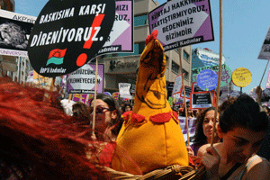

|
|

اعتراض زنان ترکیه علیه ممنوعیت سقط جنین به دوهفته رسید
دو شنبه22 خرداد 1391
شهرزاد نیوز: اعتراض زنان ترکیه به سخنان رجب طیب اردوغان، نخست وزیر اسلامگرای این کشور، که سقط جنین را قتل نامیده و در پی محدود سازی یا ممنوعیت کامل آن است، به دو هفته رسید و یک نماینده زن پارلمان ترکیه، از حزب عدالت و توسعه نیز با آن به مخالفت برخاست.
به گزارش خبرگزاری اتریش، روز جمعه 8 ژوئن بار دیگر زنان با شعار های «تن من، تصمیم من» و «در مقابل فشار مقاومت کنیم»، در خیابانهای چندین شهر بزرگ دست به تظاهرات زدند.
مساوی دانستن سقط جنین با قتل توسط اردوغان حتی موجب نا خشنودی روشنفکران نزدیک به دولت شده است. روز جمعه، برای نخستین بار، یکی از اعضای حزب حاکم عدالت و توسعه در پارلمان این کشور، مخالفت خود را با محدود کردن قانون سقط جنین اعلام داشت. نوسونا ممجان، نماینده زن پارلمان، در این رابطه به روزنامه حریت گفت که مقررات کنونی بسیار خوب است. اگر سقط جنین ممنوع شود، زنان وادار میشوند تا با پذیرش خطرات دست به سقط جنین غیر قانونی بزنند.
در مقابل، فاطما شاهین، وزیرخانواده گفت که سقط جنین به نوعی کنترل زاد و ولد تبدیل شده است. ما باید «زنان خود را تربیت» کنیم.